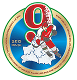

Новый спортивный год в Республике Беларусь традиционно открывает Рождественский международный турнир любителей хоккея на приз Президента Республики Беларусь. В первых числах января соревнования собирают на трибунах минских ледовых арен любителей хоккея, журналистов и болельщиков, вновь и вновь подтверждая реноме одного из самых ярких событий мирового хоккейного календаря.